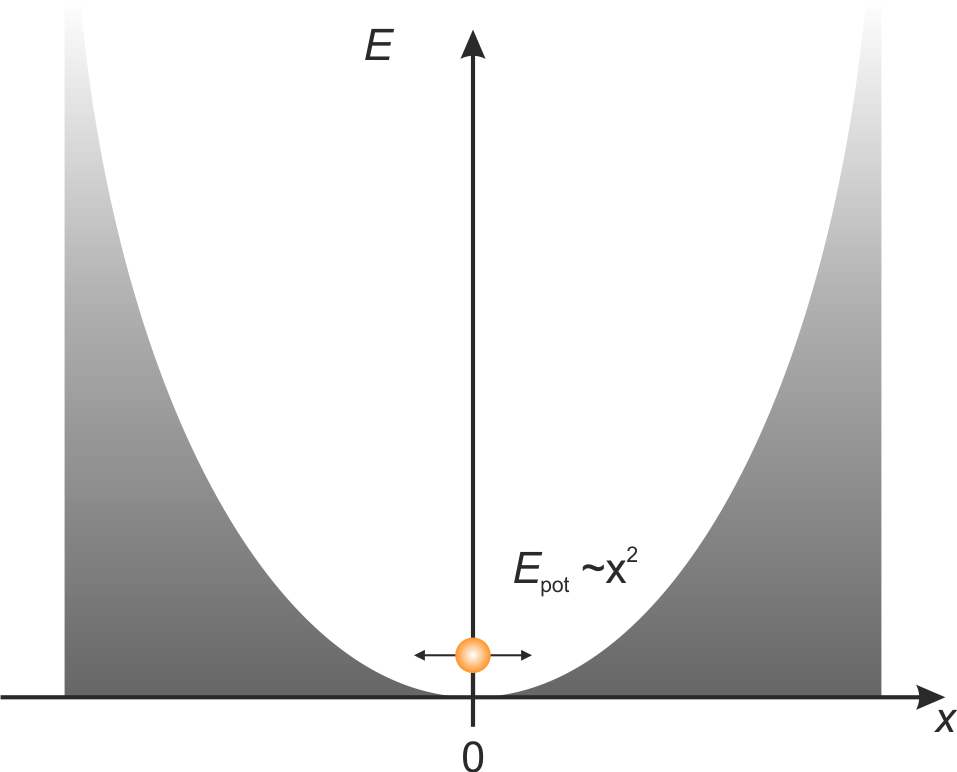
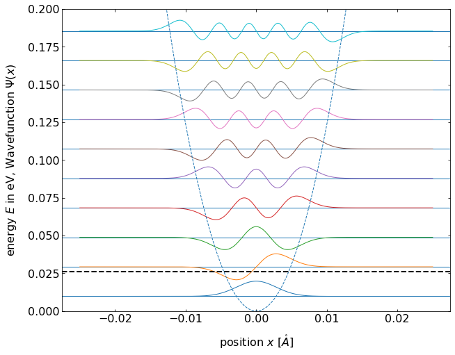
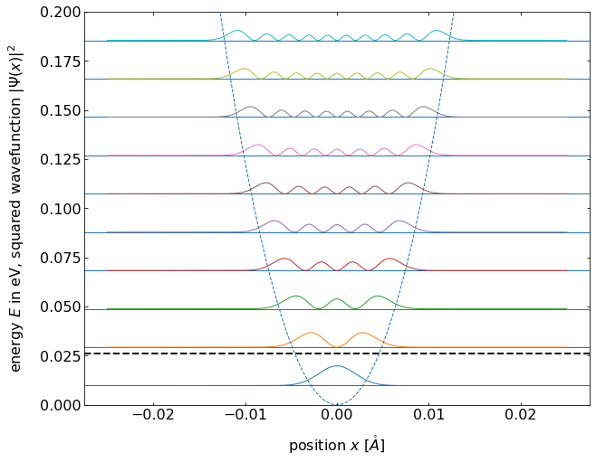
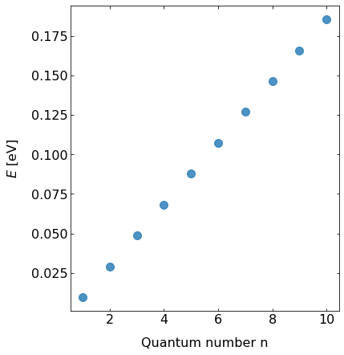

This page was generated from `/home/lectures/exp3/source/notebooks/L27_AMA/L27_harmonic_oscillator.ipynb`_.

The harmonic oscillator¶
One of the most important examples in all branches of physics is the harmonic oscillator. The potential has the shape of a parabola with the potential energy of
and the repelling force depends linearly on the deviation from the equilibrium position

Fig.: A particle within the parabolic potential of a harmonic oscillator.
In the case of classical mechanics we allready know examples like a weight at a pendulum or a weight at a spring. We can treat the weight as a point-like mass \(m\) oscillating around the rest position (\(x = 0\)) beeing reelled through the force \(F = - D x\). The mass will then conduct a harmonic oscillation with the frequency
In order to discuss a quantum mechanic harmonic oscillator we start with the Schrödinger equation and the harmonic potential \(E_{\mathrm{pot}} = D x^2/2\),
which becomes
with the aid of the relation between the freuency \(\omega\) and the curvature of the potential \(D\) and finally
Now we introduce the substitutions
and reformulate the Schrödinger equation like
In the case of very high values of \(\xi\), the term \(C\) can be neglected in comparison with the term \(\xi^2\). Thus, we can guess the solution \(\psi \left( \xi \right)\) might behave like \(\propto \mathrm{e}^{- \frac{\xi^2}{2}}\) in its asymptotic limit. The genernal solution reads as
If we now use the general solution within the re-formed Schrödinger equation, we get
The very last equation is a second order ordinary differenctial equation, which has the shape of a Hermite differential equation. Its solutions are the Hermite polynomials of degree \(n\) defined through
with \(n\) being natural number \(n = 0,1,2,3, \ldots\). If we test the Hermite polynomials in our function \(H_{n} \left( \xi \right)\), we will get
The first four Hermite polynomials \(H_n \left( \xi \right)\) and the according wave functions \(\psi_n \left( \xi \right)\) are listed in the following table.
\(n\) |
\(E_n\) |
\(H_{n} \left( \xi \right)\) |
\(\psi_{n} \left( \xi \right)\) |
|---|---|---|---|
0 |
\(\frac{1}{2} \hbar \omega\) |
\(1\) |
\(N_0 \cdot \mathrm{-\frac{\xi^2}{2}}\) |
1 |
\(\frac{3}{2} \hbar \omega\) |
\(2 \xi\) |
\(N_1 \cdot 2\xi \cdot \mathrm{-\frac{\xi^2}{2}}\) |
2 |
\(\frac{5}{2} \hbar \omega\) |
\(4 \xi^2 -2\) |
\(N_2 \cdot \left(4\xi^2-2\right) \cdot \mathrm{-\frac{\xi^2}{2}}\) |
3 |
\(\frac{7}{2} \hbar \omega\) |
\(8 \xi^3 -12\xi\) |
\(N_3 \cdot \left(8\xi-12\xi\right) \cdot \mathrm{-\frac{\xi^2}{2}}\) |
In addition, the normalization factors \(N_n \left( \xi \right)\) are indictaed which we have to chose in accord to the normalization condiction.
We can reformulate the Hermite polynomials through a power series expansion
This series has to be finite, since otherwise \(H_n \left( \xi \right)\) will approach \(+\infty\) for \(\xi > 1\) and
cannot be normalized for all \(x\). If we now use the formular for the series expansion of \(H_n \left( \xi \right)\) in the differential equation and sort by coefficients with equal power of \(\xi^k\), we obtain the recursive equation
Because the series of \(H_n \left( \xi \right)\) has to be finite, we set \(\xi^n\) as the highest power of \(\xi^k\), which results in \(a_{n+2} = 0\). As a consequence and since \(a_n \neq 0\), we can state
wich results in
If we re-substitute \(C=2E / \left( \hbar \omega \right)\) and isolate \(E\), we obtain
with \(n = 0,1,2,3 \ldots\). Thus, it is obvious that the energy eigenvalues \(E_n\) are quantized and equidistanct. Furthermore, the lowest energy is non-zero, it is rather
Since the quantum number \(n\) uniquely determines the energy of the oscillation, it is referred to as oscillation quantum number. The oscilating wave function finally reads as
 
Fig.: (left) Wave functions :math:`psi_{mathrm{n}}` positioned at the height corresponding to the equidistant energy eigenvalue :math:`E_{mathrm{n}}`. (right) The according probability densities (squared wave functions). The postential is :math:`V = 0.5 cdot x^2`.

Fig.: The energy eigenvalues :math:`E_{mathrm{n}}` in dependence of the oscillation quantum number :math:`n` on a linear scale. The postential is :math:`V = 0.5 cdot x^2`.
Concerning classical mechanics, the probability to find the “classical” oscillating particle within the interval \(\left[x;x+\mathrm{d}x\right]\) is given through
where \(T=2\pi / \omega\) is the time for one full oscillation and \(\mathrm{d}t = 1/v\left( x \right) \cdot \mathrm{d}x\) as the time interval the particle needs to cover the distance \(\mathrm{d}x\). Since the speed of the particle is \(0\) at the reversal points, the probability to find the particle is heighest at these positions.
At the state of lowets energy \(E_0\) the discrepancy between quantum mechanics and classical mechanics is the biggest. The classical harmonic oscillator exhibits a minimum of the probability at the position at rest, because there the kinetic energy is teh biggest and so the velocity. The quantum mechanic harmonic osciullator, however, exhibits the maximum probability at this position.
If we consider higher quantum numbers, the probability density \(\left| \psi_n \left( x \right) \right|^2\) rises at the turning points. Thus, for higher quantum numbers, the quantum mechanical harmonic oscillator resambles the results from classical mechanics.